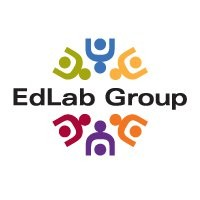

Edlab Group/Puget Sound Center for Teaching, Learning and Technology

Website:
http://www.edlabgroup.org/ Location:
Lynwood, WA
The EdLab Group (formerly the Puget Sound Center for Teaching, Learning and Technology (PSCTLT) is a private, non-profit center with funding from federal and state governments, private foundations, corporations, and individuals. Our mission is to leverage the power of technology and diversity to transform teaching and learning.
In furtherance of this mission, the EdLab Group has adopted three major strategic objectives:
New Tools for Teaching and Learning: Optimize the performance of educators and other professionals by creating innovative methods and materials and helping others to use them.
Equity: Provide programs and support that address the achievement gap in science, technology, engineering, and mathematics (STEM).
Evaluation: Provide evaluation services to empower programs and organizations to more effectively reach their outcomes and goals.
Supported Projects
Computer Distribution Coordinator
Wilson Bull
8/2008 — 8/2009
The TechREACH Alliance Project (TAP) is a partnership between the Puget Sound Center for Teaching, Learning and Technology (PSCTLT), Wilderness Technology Alliance and the TEConnections program to increase technology access and literacy in underserved communities located in Eastern Washington and Western Washington. TAP will provide technology literacy training and a refurbished computer with Internet access to people from low-income households via established partnerships with schools, DSHS, community colleges, and/or community centers.
The TechREACH VISTA will be involved in a broad range of work from administrative details to program design and implementation.
Specific responsibilities include:
• Coordinate a Train the Trainer workshop for teachers and student leaders
• Offer Technical Assistance Workshops to low-income families focused on building technology skills and awareness of resources to help families improve self-sufficiency and workplace skills
• Support after school clubs for middle and high school students in which students refurbish computers for deployment into low-income communities
• Develop partnerships with businesses, colleges and community-based organizations to support program goals and sustainability
• Assist in the development of a student-led telephone and technical support system
• Monitor and provide technical assistance to sites
• Develop and research resources to support program initiative
• Plan events in which project participants will share project results and impact
As the coordinator for the TechREACH Alliance Project, Will worked extensively on coordination, assisting with training, distributing computers, and capacity building. To begin his year of service he helped to coordinate and lead a Train the Trainer workshop for teachers and student leaders. At this workshop he also provided some new curriculum to the club leaders which provided more details about taking apart computers and troubleshooting.
After this event which kicked off the second year of the project he spent more time on supporting the after-school clubs. Checking in with club leaders to share and learn best practices was an important aspect of his work. As the year progressed he began to assist in distributing the refurbished computers at each of the ten clubs.
All in all, we’ve had nine clubs out of ten distribute computers and Will helped club leaders distribute at least 100 computers out to families. The distributions also required a lot of research and awareness of community resources such as training opportunities and internet services providers. His research in compiling these resources highlighted the need for training opportunities and internet access in Washington State. As well as utilizing partnerships with the Wilderness Technology Alliance and TEConnections to get the computers out to clubs, he created new ones with the Bridges Project of Central Washington University and Genext Communications. He worked with the Bridges Project to provide training in a rural area that does not have any local computer training options. Genext helped to provide internet access to areas not covered by our other ISP partner, Webband. The TechREACH Director and other TechREACH staff supported our VISTA in his work.
Will testified multiple times in front of Washington State legislators about the importance of broadband access and education. In addition, he helped advocate for a critical fix to the E-Waste legislation in Washington that would have prevented thousands of computers from being refurbished for distribution to low-income families.
“Will’s enthusiasm and energy was felt across the organization. The work that he did will inform a future proposal that the Communities Connect Network is submitting to support community technology and increase demand for broadband access in our state. In addition, the curriculum he helped to develop will be disseminated widely.”
- Karen Manuel
Related Content
None created yet!